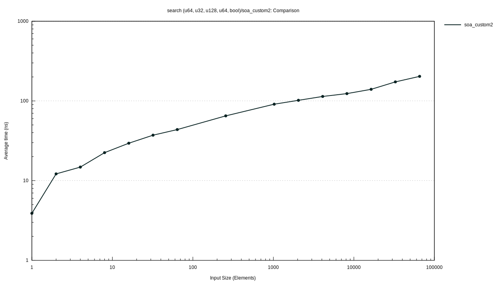

search (u64, u32, u128, u64, bool)/soa_custom2
Violin Plot
{kind=link}
This chart shows the relationship between function/parameter and iteration time. The thickness of the shaded region indicates the probability that a measurement of the given function/parameter would take a particular length of time.
Line Chart
This chart shows the mean measured time for each function as the input (or the size of the input) increases.
search (u64, u32, u128, u64, bool)/soa_custom2
/soa_custom2/pdf.svg)
|
/soa_custom2/regression.svg)
|
search (u64, u32, u128, u64, bool)/soa_custom2 #2
/soa_custom2_2/pdf.svg)
|
/soa_custom2_2/regression.svg)
|
search (u64, u32, u128, u64, bool)/soa_custom2 #3
/soa_custom2_3/pdf.svg)
|
/soa_custom2_3/regression.svg)
|
search (u64, u32, u128, u64, bool)/soa_custom2 #4
/soa_custom2_4/pdf.svg)
|
/soa_custom2_4/regression.svg)
|
search (u64, u32, u128, u64, bool)/soa_custom2 #5
/soa_custom2_5/pdf.svg)
|
/soa_custom2_5/regression.svg)
|
search (u64, u32, u128, u64, bool)/soa_custom2 #6
/soa_custom2_6/pdf.svg)
|
/soa_custom2_6/regression.svg)
|
search (u64, u32, u128, u64, bool)/soa_custom2 #7
/soa_custom2_7/pdf.svg)
|
/soa_custom2_7/regression.svg)
|
search (u64, u32, u128, u64, bool)/soa_custom2 #8
/soa_custom2_8/pdf.svg)
|
/soa_custom2_8/regression.svg)
|
search (u64, u32, u128, u64, bool)/soa_custom2 #9
/soa_custom2_9/pdf.svg)
|
/soa_custom2_9/regression.svg)
|
search (u64, u32, u128, u64, bool)/soa_custom2 #10
/soa_custom2_10/pdf.svg)
|
/soa_custom2_10/regression.svg)
|
search (u64, u32, u128, u64, bool)/soa_custom2 #11
/soa_custom2_11/pdf.svg)
|
/soa_custom2_11/regression.svg)
|
search (u64, u32, u128, u64, bool)/soa_custom2 #12
/soa_custom2_12/pdf.svg)
|
/soa_custom2_12/regression.svg)
|
search (u64, u32, u128, u64, bool)/soa_custom2 #13
/soa_custom2_13/pdf.svg)
|
/soa_custom2_13/regression.svg)
|
search (u64, u32, u128, u64, bool)/soa_custom2 #14
/soa_custom2_14/pdf.svg)
|
/soa_custom2_14/regression.svg)
|
search (u64, u32, u128, u64, bool)/soa_custom2 #15
/soa_custom2_15/pdf.svg)
|
/soa_custom2_15/regression.svg)
|